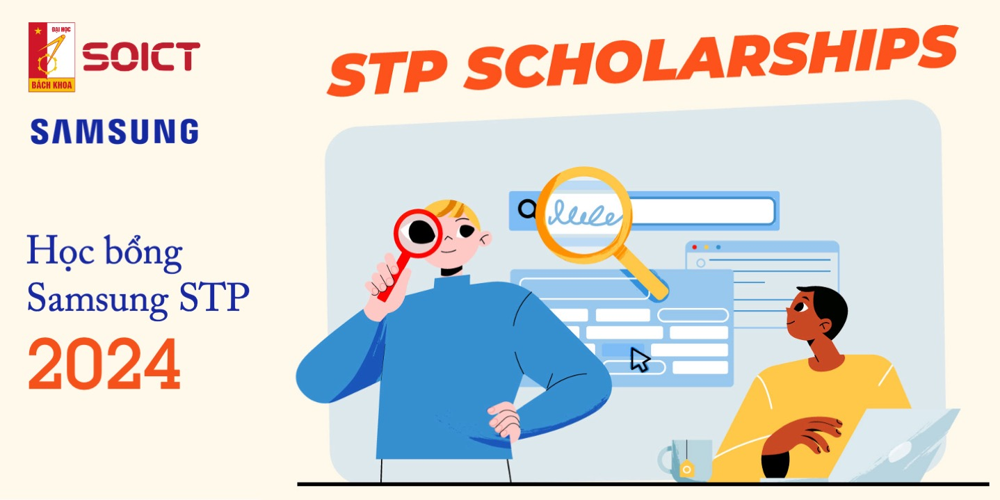

Ngày 23/09/2024, Trường Công nghệ Thông tin và Truyền thông, ĐHBKHN hân hạnh đón tiếp TS. Phạm Văn Thuận tại Đại học Melbourne, bang Victoria, Úc tại buổi Seminar khoa học hàng tháng của Trường. TS. Thuận cũng đồng thời là cựu giảng viên của bộ môn Kỹ thuật máy tính, nay là Khoa Kỹ thuật máy tính của Trường. Nghiên cứu của TS. Thuận tập trung vào các giải pháp nâng cao hiệu năng của Fuzzing. Với sự hợp tác cùng các tổ chức chính phủ và doanh nghiệp lớn, nghiên cứu của ông đã được xuất bản trên nhiều tạp chí và hội nghị lớn. Ông cũng là đồng tác giả của hai bằng sáng chế cũng như hàng loạt công cụ kiểm thử tự động mã nguồn mở. Các công cụ này đã được sử dụng để phát hiện ra hơn 100 lỗi bảo mật trên các hệ thống phần mềm phổ biến và quan trọng. Nghiên cứu của ông cũng được giới thiệu trên một số trang tin như Theregister.co.uk hay Securityweek.com.
Ngày 19 tháng 8 năm 2024, tại Trường Công nghệ Thông tin và Truyền thông, Đại học Bách khoa Hà Nội, buổi seminar về “Thực tế hỗn hợp và cơ hội nghề nghiệp trong tương lai” (Immersive Technologies and Jobs of the Future) do Tiến sĩ Hoàng Thương, Phó trưởng khoa Khoa Công nghệ Thông tin của Đại học Deakin (Úc) trình bày đã thu hút sự quan tâm của nhiều nhà nghiên cứu, sinh viên và các chuyên gia trong lĩnh vực công nghệ.
Vào buổi chiều ngày 25/9/2024, Trường Công nghệ Thông tin và Truyền thông đã tổ chức một buổi Trao Chứng chỉ TA cho sinh viên trợ giảng kỳ 2 năm học 2023-2024. Xuyên suốt học kỳ, hoạt động trợ giảng rất sôi nổi với sự tham gia của 70 bạn sinh viên ưu tú và nhiệt tình. Đến dự buổi lễ có sự tham gia của PGS. TS. Cao Tuấn Dũng, Phó Hiệu trưởng Trường CNTT&TT và TS. Trịnh Thành Trung, Phó trưởng Văn phòng Trường. Qua dịp gặp mặt này, thầy Cao Tuấn Dũng đã gửi lời cảm ơn chân thành tới các bạn sinh viên vì những đóng góp vào hoạt động giảng dạy của nhà trường, đồng thời lắng nghe ý kiến của các bạn sinh viên để hoạt động trợ giảng được phát triển tích cực hơn.
Chương trình học bổng tài năng Samsung STP được Samsung SRV mang đến cho các bạn sinh viên hệ đại học hoặc hệ thạc sỹ Trường CNTT&TT, Đại học BKHN nằm trong khuôn khổ hợp tác với Nhà trường.
Năm 2024, chương trình học bổng tài năng Samsung STP đã quay trở lại với nhiều giá trị về tiền mặt và phần quà vô cùng hấp dẫn. Đối tượng nhận học bổng là các sinh viên, học viên cao học dự kiến tốt nghiệp kỳ 2024.2 hoặc 2025.1. Đặc biệt, các bạn sinh viên đã tham gia khóa học Thuật toán ứng dụng (hợp tác với Samsung), mã học phần IT3680, sẽ được ưu tiên khi xét duyệt học bổng!
